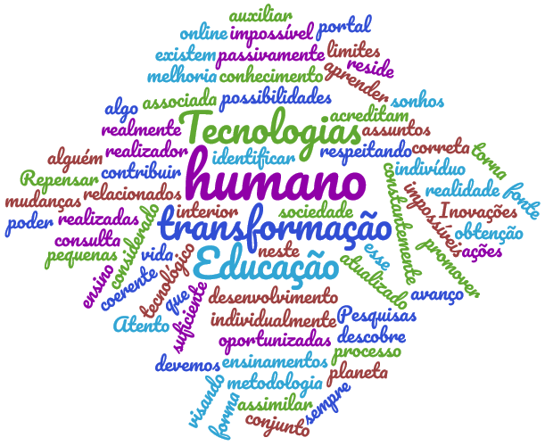

O uso das tecnologias na educaçãoAtento as mudanças oportunizadas pelo avanço tecnológico, cada indivíduo pode aprender e contribuir para melhoria de vida e da sociedade, com pequenas ações realizadas de forma correta, coerente e respeitando os limites do ser humano e do planeta. Este portal é atualizado constantemente com assuntos relacionados à Educação, Tecnologias, Pesquisas e Inovações como mais uma fonte de consulta, visando auxiliar a todos neste processo. |
 |